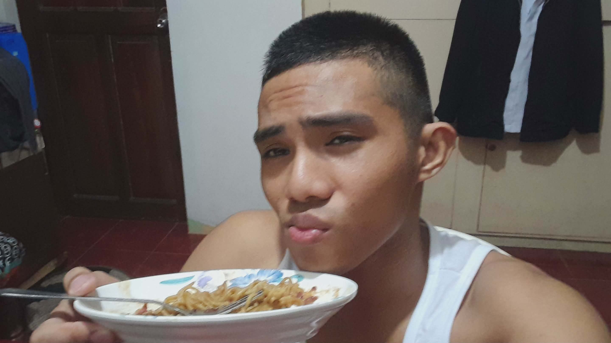

Woke up early to study again since I studied all night. My stomach still hurts a little — enough to make me uncomfortable but not too painful. Had oatmeal and green tea to soothe it.
Morning Prep
After pulling an all-nighter reviewing, I forced myself to get up early to study more. We were preparing for the quiz in Sir Ryan's class. My stomach was still acting up from the past few days, but the oatmeal and green tea helped calm it down a bit. Hopefully this peanut butter lesson sticks with me.
Capstone Topic Hunting
When we arrived at school, me, Elaine, and our friends went straight to the faculty to pick a research topic for our capstone project. It's for Sir Ryan's activity. We browsed through the list of available topics, discussing what would be feasible and interesting. After some back and forth, we finally settled on one. Feels good to have that checked off.
The only problem? We got so caught up picking the topic that we lost track of time. We ended up being late to our next class — Networking with Ma'am Jane. When we got there, she wasn't in the room yet, so we dodged a bullet there. Crisis averted.
Lunch Break
After networking class, we had lunch. Just a simple meal to refuel. We were all still thinking about the upcoming online quiz for Sir Ryan. Everyone was a bit on edge, going over notes one last time.
Surprise! No Quiz
We prepped ourselves, opened our laptops, logged into the quiz platform... and waited. And waited. Surprise, surprise — there was no quiz! All that stress and studying for nothing. Not that I'm complaining, but Sir Ryan really kept us on our toes. Relief washed over all of us.
Waiting for the Jeep
After class, we waited for a jeepney so Elaine could go home. Spent that time just chatting about the day, how funny it was that the quiz didn't push through, and what our next steps are for the capstone project. Simple conversations, but nice.
Pancit Dinner
When I got home, I was hungry but didn't want anything heavy. So I cooked pancit canton for dinner. Quick, easy, and hits the spot. Ate while scrolling through my phone, winding down from the day. My stomach was still a bit off, but the pancit was comforting.

Studied all night for a quiz that didn't exist. At least we got our capstone topic and pancit for dinner.
Time to actually rest tonight. No more all-nighters (for now).
— CJ